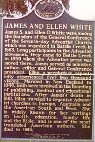
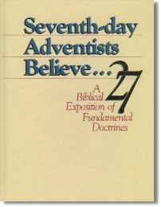

The "2,000 Visions" Fable
The Seventh-day Adventist Church has made every effort to make the claim that their prophetess Ellen G. White (EGW) had OVER 2,000 visions during her lifetime.
How did this number of "over" 2,000 visions come about?
If Adventism lies about this can they be trusted on other claims they make about their prophetess?
We will look at three sources where the Adventism promotes Ellen G. White as having "over" 2,000 visions: a plaque located at Oak Hill Cemetery, Battle Creek, Michigan; Seventh-day Adventists Believe; and the book Charismatic Experiences by Arthur White, EGW's grandson.

The Adventist claim is on a plaque located at Oak Hill Cemetery, Battle Creek, Michigan, where James and Ellen White are buried.
The plaque says, "Ellen, a prophetess reportedly experienced over two thousand visions." (Notice the white line drawn under the statement.)
Another interesting note: When Adventists are confronted with EGW's failed visions and Bible contradictions they try to get her off the hook by saying that she was not a prophetess—but look what the plaque states—"Ellen, a prophetess...".

The Adventist doctrinal explaination, Seventh-day Adventists Believe,proudly states as fact that EGW had more than 2,000 visions. The book does not say that the number is an estimate, or the source of the number.
"From 1844, when she 17, until 1915—the year of her death—she had more than 2,000 visions." Seventh-day Adventists Believe, p. 224.
"THROUGH THE 70 YEARS of her ministry to the Adventist Church and the world, Ellen White, closely tied in to the work of the Holy Spirit—so closely that the Spirit gave her 2,000 visions." Charismatic Experiences In Early Seventh-day Adventist History, by Arthur L. White.
Arthur White reports as fact "that the Spirit gave her 2,000 visions." Then he changes what the Spirit gave his grandmother to "approximately two thousand visions" in the next presentation.
"Certain documents issued by the White Estate have declared that Ellen White was favored through the seventy years of her ministry with approximately two thousand visions. Perhaps it would be illuminating to disclose the basis for arriving at this figure.
"Now back to the estimate of the number of occasions given to Ellen White. This estimate was made by Arthur White, who through his lifetime connection with the work of the White Estate led him to assume that visions of one kind or another were given to her on an average of one in two weeks.
“In the later years when visions were usually given to her in the hours of the night, they were much less comprehensive in their nature and quite frequent. There were times when two or three visions given to in one week. Taking all the circumstances into account, it seems reasonable that an estimate reached on the basis of an average of vision given once in two weeks throughout her lifetime is conservative. None-the-less, it must be kept in mind that this is but an estimate, and set forth as such." Variation and Frequency of the Ellen G. White Visions, by Arthur L. White (This document was presented at the International Prophetic Guidance Workshop April 11-15, 1982).
It was most interesting to see how Arthur White came up with the estimated 2,000 visions. In the first paragraph he did not disclose what the "certain documents" were that led to his estimate. He did include the night time visions. I wonder if someone sat by EGW's bed using EGW's lapboard and logged all her visions.
Adventism has taken Arthur White's proclamation that EGW had 2,000 visions and made it a fact by memorializing it on EGW's cemetery plaque and in their publications. This is a gross falsehood to mislead the church and the public. Arthur White and the SDA organization have made EGW the "Babe Ruth" of visionaries, by having the most visions of any prophet that has ever lived.
Calculating the Number of Visions
Husband James White gives EGW an estimate of 100-200 visions from 1844-1868. James White wrote,
“She has probably had, during the past twenty-three years, between one and two hundred visions.” Life Incidents, 1868, p. 272.
Using James' highest estimate of 200 visions between 1844-1866, a 23 years period, would result in a yearly average of 8.6 visions. Keep this highest average of 8.6 visions a year in mind.
Arthur White comments on James White's estimate: "that this would mean an average vision once in six weeks." Variation and Frequency of the Ellen G. White Visions, p. 2.
Subtracting 1868 from 1915 the year of EGW's death is 47 years. Using James' highest estimate of visions of 8.6 x 47 years we have 404.2 visions for the 47 year period.
By adding 402.2 visions to the 200 visions we now have 602.2 visions from 1844 to 1915. Subtracting this from Arthur Whites' 2,000 visions we are missing 1397.8 visions.
White Estate's Published Record of Visions
The White Estate’s own Index to the Writings of Ellen G. White, volume 3, pages 2978-2984 add up to about 188 visions for EGW.
Total Visions: 188 over 71 years, 2.5 average per year—not close to 2,000 visions.
Frequency of Major Bible Prophet's Visions
Total visions mentioned in the Bible: 42
Ellen White's total: over 2,000
Reasons EGW's Visions Are Not More Frequent In 1855
Ellen G. White in 1855 wrote,
“I saw that the reason why visions have not been more frequent of late is, they have not been appreciated by the church. The church have nearly lost their spirituality and faith, and the reproofs and warnings have had but little effect upon them. Many of those who have professed faith in them have not heeded them” 5 Testimonies, page 674.
According to EGW the amount of visions given to her are based on church "appreciation". Wouldn't God send more visions if the church had lost it's spirituality to get them back to being spiritual? It is hard to believe that God would withhold visions because a few people would not accept EGW's testimonies. Where has any Bible prophet used the excuse for not getting more visions " they were not appreciated"?
Certainly the SDA Church has not gotten any better spiritually since 1855 as we read it's history about church leaders and members that refused to accept EGW's testimonies as coming from God. God must have changed his mind after 1855 according to Arthur White as he proclaimed EGW had "over 2,000 visions".
Web Sites Promote Arthur's "White-Lie"
I have listed just threef web sites that promote EGW as having 2,000 or more visions so the readers can see how the leaders of the SDA Church and Adventist ministries lie to the public and their own members.
Adventism's Loma Linda Medical Center: Today Seventh-day Adventists believe that the source of her writings, the source of her inspiration, was more than human; that the two thousand "visions" given her during her lifetime were the result of her having received the "gift of prophecy."
Michigan Historical Markers: Ellen, a prophetess, reportedly experienced over two thousand visions.
Spectrum Magazine news story: ...Ellen White’s some two thousand visions, which Adventists believe came directly from God, the film states.
Another Report of Persons Having Over 2000 Visions
In 1961, in the village of San Sebastian de Garabandal in northwestern Spain, four young girls—Mari-Loli Mazon, Jacinta Gonzalez, Maria Cruz Gonzalez and Conchita Gonzalez—reportedly had a series of visions of St. Michael the Archangel and the Blessed Virgin. In all, there were reported to be over 2,000 apparitions spread over a five year period. During these apparitions, the visionaries claimed that they were asked by the Blessed Virgin to plead with humanity to return to God through prayer, fasting, frequent confession and reception of the Eucharist and acts of mercy.
Children make a claim of having "over 2,000 visions" of the Virgin Mary in five years. According to Arthur White, EGW received her 2000 visions over a 70 year period.
Sections
Robert K. Sanders, Founder and Editor of Truth or Fables, 1997–2012
Life Assurance Ministries assumed ownership of Truth or Fables in 2012
© 2016 Life Assurance Ministries. All rights reserved.